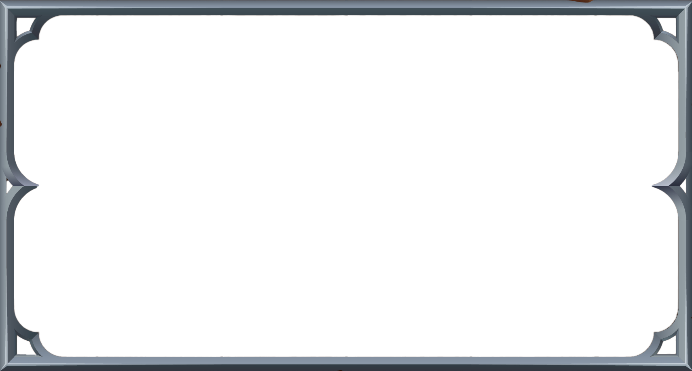
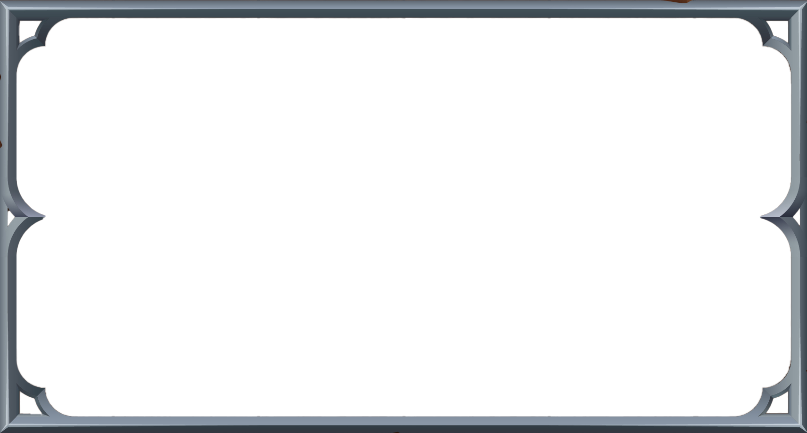

Dans Vindicta, nous incarnons un jeune homme vivant avec ses proches et autres villageois en pleine nature. Un beau jour, alors que notre protagoniste revient de chasse, il aperçoit au loin une lumière irradier au-dessus de son village. Il accourt donc jusqu’à chez lui, mais il arrive trop tard. Tous les habitants ont disparu en même temps que cette étrange lumière. Que reste-t-il ? Un esprit, qui deviendra son futur compagnon, lui indiquant la route pour parvenir à une tour dont l’entrée est justement plongée dans un rayonnement semblable à celui qui a causé la disparition de ses compères. À l’intérieur de celle-ci, une multitude de monstres s’en prennent à lui. Mais d’où proviennent-ils ? Quel lien existe-t-il entre ces chimères et les habitants de son village ? Notre personnage tentera d’élucider ces mystères en s’élevant au sein de cette tour, acquérant des compétences supplémentaires au cours de combats qui se compliquent d’ennemis en ennemis.
 

Notre personnage principal, celui que vous jouerez tout au long du jeu. Ce jeune homme destiné à devenir bûcheron au sein de son village va être bouleversé par un évènement singulier qui l'obligera à sortir de son mode de vie habituel pour partir explorer et combattre malgré lui des mystérieux ennemis. Son périple pour retrouver les membres de son village bien aimé va se transformer au fur et à mesure de la progression de l'histoire et des découvertes qu'il fera en une quête bien plus sombre.


Il s'agit du personnage secondaire de Vindicta; celui que le deuxième joueur peut contrôler en mode multijoueurs. Ce mystérieux esprit va proposer son aide et son soutien à notre héros pour des raisons qui sont encore inconnues du joueur. Cependant, au fur et à mesure de la progression de l'histoire, on en apprendra davantage sur cette mystérieuse entité.